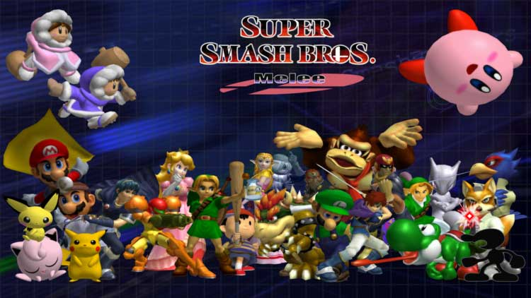

Super Smash Bros. Melee (SSBM), or Melee, is a 2.5D platform fighting game for the Nintendo GameCube. Over time, Melee was able to become its very own e-sport, thanks to the support from its tight-knit community composed of players from world. As years went by, its reputation and revelance grew stronger, with the addition of sponsors providing salaries to top players, players streaming the game on websites, such as Twitch and Smashcast (formerly known as Hitbox), and pot bonuses at large events provided by community members and Nintendo. The main goal of this website is to teach the viewer some of the basic techniques and attributes of the Melee competitive scene. This includes the characters available in games, essential techniques, such as l-canceling and various recovery options, the different movement styles, and the legal stages in tournament play.
Images and videos from the following sources: